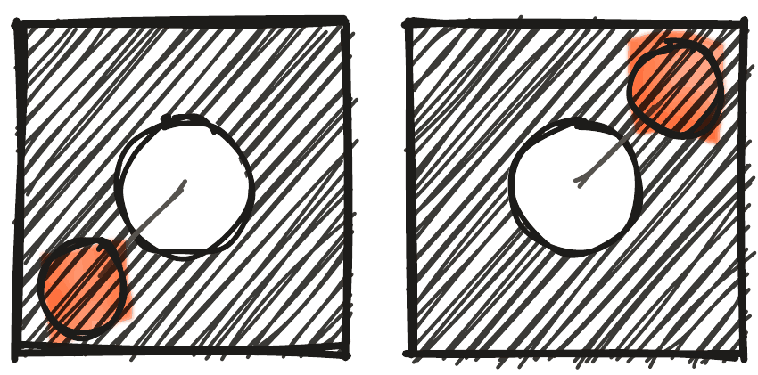

Enne esimest lendu on vaja teha neli asja: siduda pult drooniga, kalibreerida droon, käivitada mootorid ja teada, kuidas need hädaolukorras kohe seisma panna.
Enne starti
Enne starti pane droon tasasele pinnale enda ette nii, et tagumine LED vaatab sinu poole: siis liigub droon nii, nagu kangid ütlevad. Kontrolli, et puldil ja droonil oleks sama number, ja et aku oleks täis ja korralikult kinni.


Drooni ja puldi ühendamine
Kui droon ja pult on mõlemad sees, aga mõlemad LED-id vilguvad, ei ole nende vahel raadioühendust. Liiguta mõlemat kangi samal ajal näidatud suundades ja hoia, kuni droon ja pult vilgutavad kiiresti kolm korda ja jäävad siis püsivalt põlema. Veendu, et sul on käes õige pult (reeglina on pult ja droon tähistatud numbriga) ja et keegi teine ei tee samal ajal sama, muidu võib pult ühenduda vale drooniga. Kui ümberringi on palju drooneid, näiteks võistlusel, lülita mõlemad välja ja lülita sisse kõigepealt droon ja alles siis pult.

Drooni kalibreerimine
Kalibreerimisel värskendab droon oma güroskoobi andmed ja asendab need puhastega. Aseta droon tasasele pinnale enda ette, tagumine LED sinu poole, liiguta mõlemat kangi näidatud suundades ja hoia, kuni droon ja pult vilgutavad kiiresti kolm korda ja jäävad püsivalt põlema. Kalibreeri enne trenni ja alati pärast kõva kukkumist.

Kuidas õhku tõusta?
Esimene samm on eelkäivitus ehk pre-arm: vajuta pre-arm nuppu ja pult piiksub. Teine samm on käivitus ehk arm: liiguta vasakut ehk throttle-kangi üles ja tagasi keskele, ja propellerid hakkavad pöörlema. Kolmas samm: liiguta throttle-kangi üles ja droon tõuseb maast lahti.

Hädaseiskamine ja maandumine
Hädaolukorras vajuta pre-arm nuppu uuesti: mootorid seiskuvad kohe. Harjuta seda enne esimest lendu: droon seisab laual, sina oled eemal, ja pre-arm peatab mootorid. Maandudes lase droon rahulikult alla ja kui propellerid pärast maandumist ei peatu, hoia throttle-kangi all üle kahe sekundi. Kui pult piiksub, on aku tühjaks saamas: maandu ja vaheta aku.

Seo, kalibreeri, pre-arm, arm, lenda. Hädas: pre-arm uuesti.
Treenerile: 10 minuti plaan
| Aeg | Slaid | Mida rääkida |
|---|---|---|
| 0:00 | Pealkiri | Küsi: „Mis on kõige tähtsam nupp puldil?“ Õige vastus: see, mis peatab mootorid. |
| 0:40 | Joon. 1: Enne starti | Enne starti pane droon tasasele pinnale enda ette nii, et tagumine LED vaatab sinu poole: siis liigub droon nii, nagu kangid ütlevad. Kontrolli, et puldil ja droonil oleks sama number, ja et aku oleks täis ja korralikult kinni. |
| 2:26 | Joon. 2: Drooni ja puldi ühendamine | Kui droon ja pult on mõlemad sees, aga mõlemad LED-id vilguvad, ei ole nende vahel raadioühendust. Liiguta mõlemat kangi samal ajal näidatud suundades ja hoia, kuni droon ja pult vilgutavad kiiresti kolm korda ja jäävad siis püsivalt põlema. Veendu, et sul on käes õige pult (reeglina on pult ja droon tähistatud numbriga) ja et keegi teine ei tee samal ajal sama, muidu võib pult ühenduda vale drooniga. Kui ümberringi on palju drooneid, näiteks võistlusel, lülita mõlemad välja ja lülita sisse kõigepealt droon ja alles siis pult. |
| 4:12 | Joon. 3: Drooni kalibreerimine | Kalibreerimisel värskendab droon oma güroskoobi andmed ja asendab need puhastega. Aseta droon tasasele pinnale enda ette, tagumine LED sinu poole, liiguta mõlemat kangi näidatud suundades ja hoia, kuni droon ja pult vilgutavad kiiresti kolm korda ja jäävad püsivalt põlema. Kalibreeri enne trenni ja alati pärast kõva kukkumist. |
| 5:58 | Joon. 4: Kuidas õhku tõusta? | Esimene samm on eelkäivitus ehk pre-arm: vajuta pre-arm nuppu ja pult piiksub. Teine samm on käivitus ehk arm: liiguta vasakut ehk throttle-kangi üles ja tagasi keskele, ja propellerid hakkavad pöörlema. Kolmas samm: liiguta throttle-kangi üles ja droon tõuseb maast lahti. |
| 7:44 | Joon. 5: Hädaseiskamine ja maandumine | Hädaolukorras vajuta pre-arm nuppu uuesti: mootorid seiskuvad kohe. Harjuta seda enne esimest lendu: droon seisab laual, sina oled eemal, ja pre-arm peatab mootorid. Maandudes lase droon rahulikult alla ja kui propellerid pärast maandumist ei peatu, hoia throttle-kangi all üle kahe sekundi. Kui pult piiksub, on aku tühjaks saamas: maandu ja vaheta aku. |
| 9:30 | Jäta meelde | „Seo, kalibreeri, pre-arm, arm, lenda. Hädas: pre-arm uuesti.“ |
Demo: Iga laps teeb laual läbi: sidumine, kalibreerimine, pre-arm, arm ja kohe hädaseiskamine. Alles siis esimene hõljumine.